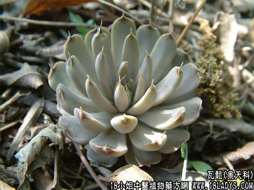

【中药概述】
瓦松为景天科草本植物瓦松或晚红瓦松的全草。酸、苦，凉。归肝、肺经。
1．清热解毒：用于疮疡肿毒，蛇虫咬伤，水火烫伤等症。
2．清利湿热：用于湿热黄疸，肝炎，热淋，湿疹瘙痒，下痢脓血等症。
3．止血敛疮：用于血痢，便血，吐血，鼻衄，疟疾；外治疮口久不愈合。
【临证应用】
治宫颈癌，属血瘀内阻型，面色晦暗，赤白带下，伴有恶臭，少腹疼痛。用本品30g、红花，白矾各6g，加水500毫升同煎，先熏后洗外阴部，每日1～2次，每次30分钟，下次加热后再用。
【用量用法】
本品9——25g，水煎服；外用适量。